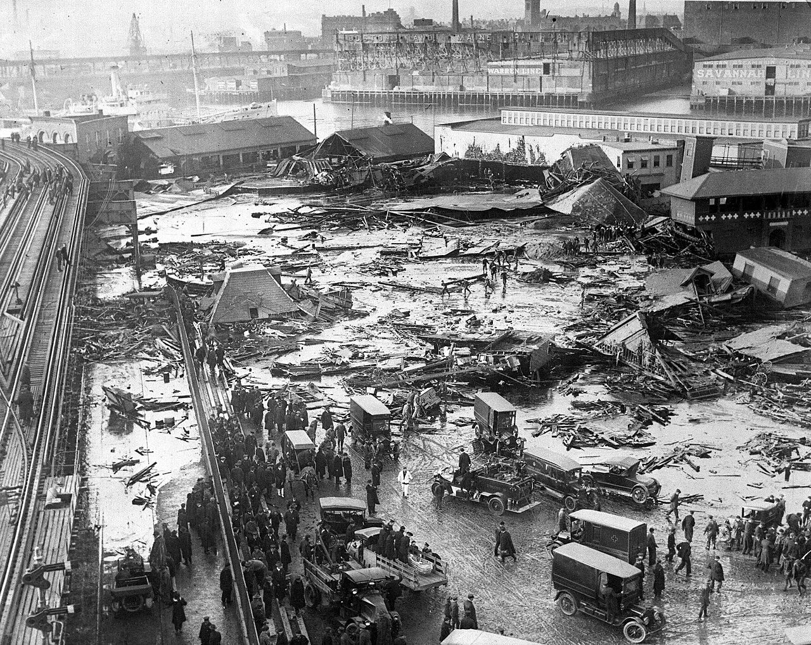
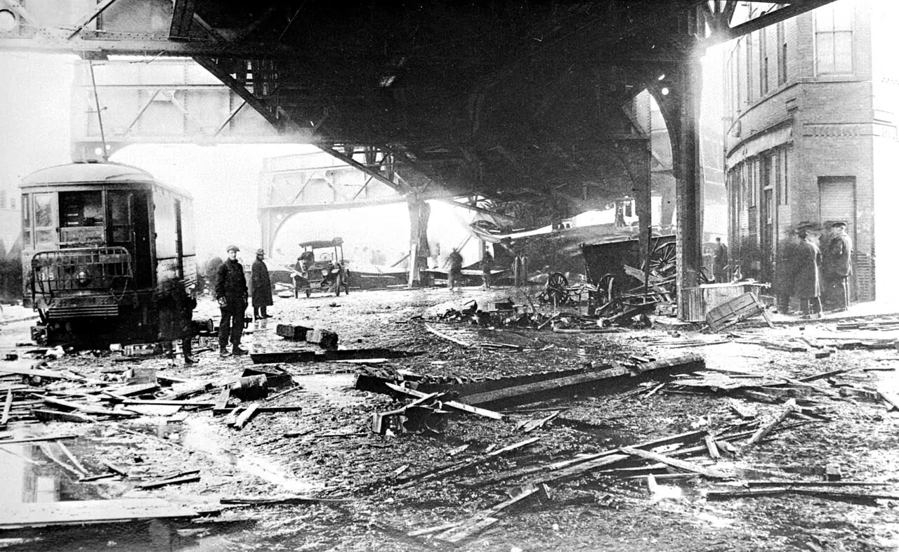
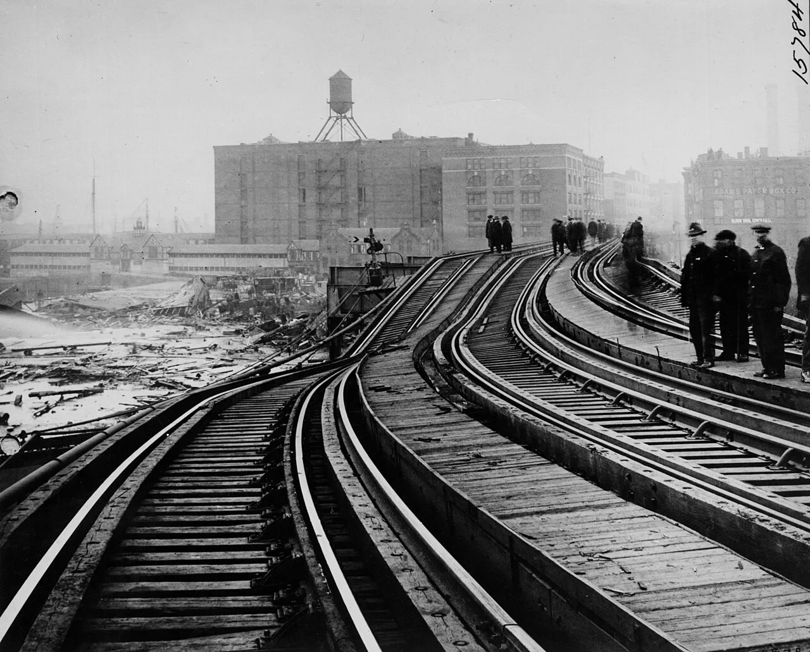

The strange material hides a familiar risk
Molasses is memorable because it feels too slow and domestic to become a disaster. But in a large tank, under pressure, at industrial scale, ordinary material stops behaving like an ordinary kitchen substance. Volume changes the story.
The tank failure sent a dense, sticky wave through streets. The disaster is often retold for its surreal image, but the serious lesson is engineering oversight. Storage, inspection, design margins, material stress, and public regulation all mattered.

Why the story still gets repeated
People remember the molasses flood because the material feels absurd. That oddness makes the event easier to retell, but it can also make the disaster seem less real. WeirdWeek treats the strangeness as the doorway, not the destination. The useful question is: what had to be ignored for this to happen?
Industrial cities often placed large, risky systems close to workers and residents. Tanks, rail lines, warehouses, boilers, and factories all made urban life faster and more productive while concentrating danger. The molasses tank was one visible failure inside that broader pattern.
The useful lesson
A good safety system assumes that boring things can become dangerous at scale. Liquids, powders, gases, crowds, elevators, and batteries all become different when quantity, speed, or pressure changes. The Boston molasses flood remains strange, but it is not a joke. It is an engineering story with a memorable texture.
The tank was part of a supply chain
The structure stored molasses at industrial scale near Boston's waterfront and transport connections. The material was valuable as a feedstock, and speed mattered to the business using the tank. That context matters because infrastructure failures rarely begin with a single dramatic mistake. Schedules, procurement, testing, maintenance, and management decisions accumulate around the physical object.
Residents reportedly noticed leaks before the failure. Children collected molasses from the tank's exterior, a detail that is often retold as local color but also signals normalization. When a defect remains visible without decisive repair, a community can begin treating warning evidence as part of the landscape.

Why viscosity did not make the wave harmless
Molasses moves slowly when poured from a small container, but a sudden release from a large tank involves enormous volume and stored pressure. The initial flow could move with destructive force. As the material spread and cooled, its viscosity created a different danger by trapping people and complicating rescue.
The two phases help explain why kitchen intuition fails at industrial scale. Familiar material properties still apply, but quantity, temperature, confinement, and release speed change what those properties mean for people nearby.
The legal aftermath mattered
The disaster led to extensive litigation and investigation. Responsibility could not be dismissed as an unknowable act of sabotage or bad luck. Evidence about design, construction, testing, and warnings became part of a public argument over negligence.
That argument belongs to the history of engineering accountability. A tank is not only steel and rivets; it sits inside a system of approvals, expertise, inspection, ownership, and duty to neighbors. The flood made those relationships visible in court as well as in the street.
